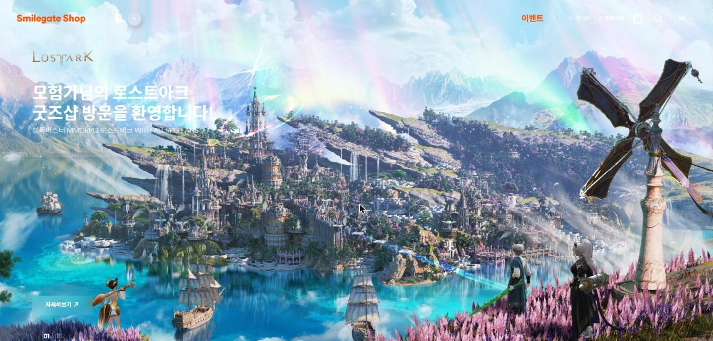

스마일게이트샵 글로벌 서비스 구축Smilegate Shop global launch
포비즈코리아Forbiz Korea
다국가 결제와 정책에 대응하는 구조를 설계했습니다. 5인, 4개월 프로젝트의 Project Leader였고 결제와 정책 구조를 중심으로 약 50%를 기여했습니다.
I designed the structure for multi-country payments and policies. I was Project Leader of a 5-person, 4-month project and contributed about 50%, mainly the payment and policy structure.
- 문제Problem
- 국가마다 통화, 결제, 배송 정책이 달라 코드 분기만으로는 확장하기 어려웠습니다.Currency, payment and shipping rules differed by country, and code branches alone would not scale.
- 접근Approach
- 국가 정책 테이블과 공통 결제 인터페이스를 두어 정책을 코드에서 설정으로 옮겼습니다.A country policy table and a shared payment interface moved the rules from code into configuration.
- 결과Result
- 4개국 동시 출시, 국가 추가 2주 → 2일, 환불 금액 불일치 0건.Launched in 4 countries at once, adding a country 2 weeks → 2 days, zero refund mismatches.
- 역할Role
- Project LeaderProject Leader
- 팀Team
- 5인, 기여 약 50%5 people, about 50% mine
- 출시Launch
- 4개국 동시4 countries at once
- 환불 검증Refund scenarios
- 40건40

Service
스마일게이트의 공식 굿즈 판매샵입니다. 크로스파이어, 로스트아크, 에픽세븐 같은 게임과 스마일메이츠, 스마일펫 캐릭터의 상품을 팝니다. 설정집, 봉제인형, 가방처럼 실물 상품을 여러 나라의 팬에게 배송하기 때문에, 통화와 결제 수단과 배송 방식이 나라마다 달라집니다.
The official Smilegate goods store. It sells merchandise for games such as CrossFire, Lost Ark and Epic Seven, and for the Smilemates and Smilepet characters. Because physical goods such as art books, plush toys and bags ship to fans in several countries, currency, payment methods and shipping differ by country.
Problem
국가마다 통화, 결제, 배송 정책이 달랐습니다. 코드 분기만으로는 여러 나라로 확장하기 어려웠습니다.
Currency, payment and shipping rules differed by country. Branching in code alone would not scale to many countries.
What I did
- 국가 추가 대응 2주 → 2일Adding a country, 2 weeks → 2 days
- 국가 정책 테이블과 공통 결제 인터페이스를 두어 정책을 코드가 아닌 설정으로 옮겼습니다.A country policy table and a shared payment interface moved the rules out of code and into configuration.
- 복합 결제 부분 환불 금액 불일치 0건Zero amount mismatches in partial refunds of mixed payments
- 일반 결제에 포인트 2종이 섞인 환불 시나리오 40건을 QA로 검증했습니다.QA verified 40 refund scenarios that combine a normal payment with two kinds of points.
- 연동과 리딩Integrations and leading
- 국내와 해외 결제(이니시스, 엑심베이), EMS, 복지포인트, SNS 로그인 5종을 연동하고 다국어 검색을 구현했습니다. PL로서 일정과 산출물 품질을 관리했습니다.I integrated domestic and overseas payments (Inicis, Eximbay), EMS, welfare points and 5 social logins, and built multilingual search. As PL I managed the schedule and the quality of deliverables.
- 정책 테이블 구성The policy table
- 국가별로 통화, 사용할 결제 수단, 배송 방식, 언어를 한 행에 두고 코드는 이 값을 읽어 동작합니다. 새 국가는 행을 추가하고 번역을 넣으면 됩니다.Each country has one row holding its currency, payment methods, shipping method and language, and the code reads those values. A new country means adding a row and its translations.
- 공통 결제 인터페이스The shared payment interface
- 결제 요청, 승인, 취소, 부분 취소를 같은 메서드로 정의하고 이니시스와 엑심베이를 각각 구현체로 뒀습니다.Request, approve, cancel and partial cancel are defined as the same methods, with Inicis and Eximbay each as an implementation.
Hard parts
- 포인트가 섞인 결제의 부분 환불은 어떤 수단부터 돌려주느냐에 따라 금액이 달라집니다. 시나리오 40건을 먼저 정의하고 그에 맞춰 구현했습니다.In a partial refund of a payment mixed with points, the amounts depend on which method is refunded first. I defined 40 scenarios first and built to them.
- 4개국을 같은 날 여는 일정이라 국가별 검증을 동시에 진행해야 했습니다.Opening 4 countries on the same day meant verifying each country in parallel.
Result
4개국 동시 런칭 일정을 지켰고, 결제와 검색을 확장할 수 있는 구조를 확보했습니다.
We met the date for a simultaneous launch in 4 countries, and ended up with a structure that lets payments and search expand.
What I learned
- 분기가 늘어날 조짐이 보이면 일찍 설정으로 빼는 편이 비용이 적게 듭니다.When branches look set to multiply, moving them into configuration early costs less.